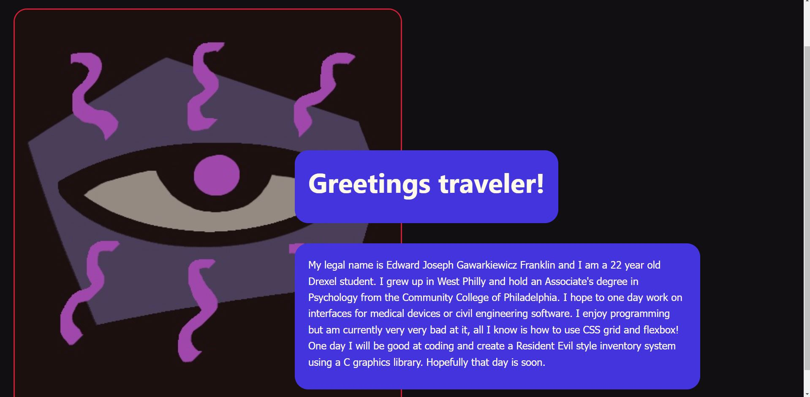
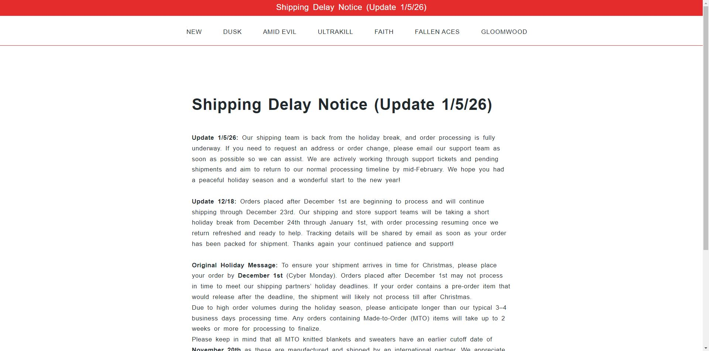
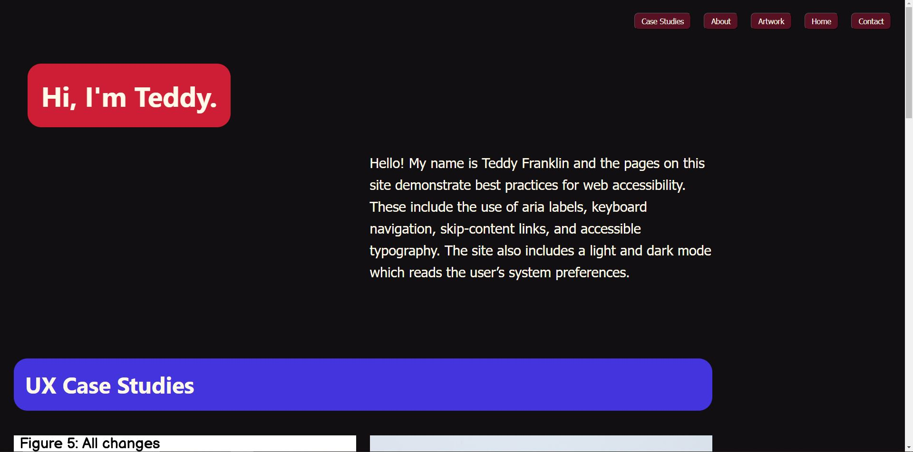

Overview
This case study recounts the insights gleaned while creating a web-accessible site for a scripting class. Each assignment we were given covered a different topic in accessibility. Putting these assignments together culminated in a fully functional live site that accounts for the large swath of the population requiring these features. Extra emphasis was put on keyboard navigation, accessible typography, and semantic HTML.
Context
Background
This project was done for the recently introduced Scripting for Accessibility elective. This class served as an introduction to all of the main topics and techniques within the realm of web accessibility. It showed us how to make web pages readable for a wide variety of users.
The Problem
This project exists to exemplify how sites should be designed to account for users with disabilities. Disabilities impact people in drastically different ways, which requires developers to use a wide array of tools as a means to meet user needs. Visually impaired users require highly visible typography, physically impaired users require keyboard navigation to use sites, and cognitively impaired users require sites to have an easily understandable structure. The needs of those with disabilities are incredibly diverse, and this site acts as a guide for best practices when designing for these groups.
Goals
The most tangible objective for this project is a functional site that is easily navigable using only a keyboard. This requires the employment of tools such as aria labels, skip-content buttons, and semantic HTML. The other main performance metric applicable to this project is its adherence to the WCAG. This document specifies appropriate color contrast values, fonts, and general best practices.
Process
Sketches
Below are drawings I made to plan the layouts for certain pages. I like to define content areas on pen/paper before going directly into CSS. This process saves me the time of creating assets in figma and forces me to create a mental model for CSS.
Color and Typography
Our first assignment was to create a color scheme and typography plan that met WCA guidelines. I chose a sans-serif typeface and an easily parsable color scheme to ensure readers would not have difficulty understanding any of the content.
Prototypes
Our second assignment was to strip an existing live website of its CSS and add accessibility features to it. Without understanding how much of an undertaking this would be, I decided to do this assignment on a shopify site with over 10k lines of HTML. I stayed up until about 4am trying to complete this assignment, and the final product left much to be desired.

Our following assignments were to expand on this site by adding new pages and accessibility features. I wisely decided to do these assignments on a site I built from scratch.
Code
The hardest coding assignment for this course was the form validation. This required the use of an array of objects for the text fields, and a separate method for the email field.
Solution
The final project was the result of putting all of these pages together on the same site, then adding a bit of polish.
Results
The final page is keyboard navigable, visually accessible, and exhaustively follows the necessary WCA guidelines. Every color combination had its contrast tested, every HTML element is semantic, and all links work. It may not be the most complicated or flashy site out there, but I am certainly proud of how far I came with this project when considering where I started.
